Cargador Apple.
- Cargador Apple

- Características principales:
- La mayoría de los modelos de iPhone anteriores al iPhone 11 incluían un adaptador de energía de 5 W en la caja.
- El iPad (octava generación) y el iPad Air (cuarta generación) incluyen un adaptador de energía de 20 W en la caja.
- Cable de Lightning a USB (2 m).
Comprar producto
Ver video del producto